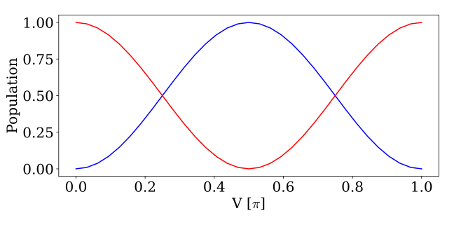
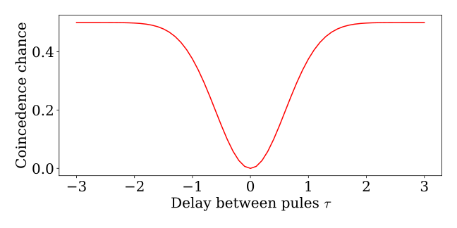
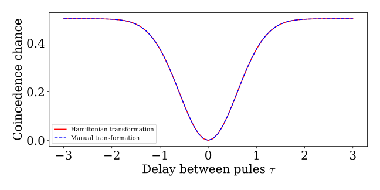

Beamsplitters
Having introduced multiple waveguides in Multiple Waveguides, it is natural to implement the beamsplitter operation and consider some of the common measurements one would make on states having undergone a beamsplitter transformation.
We start by introducing how a beamsplitter can be implemented using two waveguides that interact. For simplicity, we consider only a single photon in one waveguide. First, we create the basis, operators of the multiple waveguides, and an initial single photon state with a gaussian wavefunction residing in waveguide 1:
times = 0:0.1:10
dt = times[2] - times[1]
NPhotons = 2
NWaveguides = 2
bw = WaveguideBasis(NPhotons,NWaveguides,times)
w1 = destroy(bw,1)
wd1 = create(bw,1)
w2 = destroy(bw,2)
wd2 = create(bw,2)
ξ(t, t0=5, σ=1) = complex(√(2/σ)*(log(2)/pi)^(1/4)*exp(-2*log(2)*(t-t0)^2/σ^2))
psi = onephoton(bw,1, ξ)We now want to consider the following beamsplitter transformation: $w_{k,1} \rightarrow \cos(V) w_{k,1} - i \sin(V) w_{k,2}$ and equivalently for waveguide 2: $w_{k,2} \rightarrow - i \sin(V) w_{k,1} + \cos(V) w_{k,2}$. Having access to our initial Gaussian wavefunction, we could just create the transformed state as:
V = pi/4
psi_trans_manual = cos(V) * onephoton(bw,1, ξ) -im*sin(V)*onephoton(bw,2, ξ)A more automatic and equivalent method is, however, instead to let the waveguide state undergo evolution under the Hamiltonian: $H = V( w_{k,1}^\dagger w_{k,2} + w_{k,2}^\dagger w_{k,1})$, which performs the same transformation. See Section 4.3 for details of the derivation. We can confirm this by:
using PyPlot
Vs = 0:pi/32:pi
reflection = zeros(length(Vs))
transmission = zeros(length(Vs))
n1 = wd1 *w1
n2 = wd2 *w2
psi = onephoton(bw,1, ξ)
for (i,V) in enumerate(Vs)
H = V/dt*(wd1 * w2 + wd2*w1)
psi_trans = waveguide_evolution(times,psi,H)
transmission[i] = expect_waveguide(n1,psi_trans)
reflection[i] = expect_waveguide(n2,psi_trans)
end
fig,ax = subplots(1,1,figsize=(9,4.5))
ax.plot(Vs/pi,reflection,"b-",label="Waveguide a")
ax.plot(Vs/pi,transmission,"r-",label="Waveguide b")
ax.set_xlabel(L"V [$\pi$]")
ax.set_ylabel("Population")
plt.tight_layout()┌ Warning: No working GUI backend found for matplotlib
└ @ PyPlot ~/.julia/packages/PyPlot/G422O/src/init.jl:153
Here, we see this population of waveguides 1 and 2 after the transformation varies as cosines and sines as we change the interaction parameter V. Thus, we confirm that we are applying the desired transformation. For an even beamsplitter, we thus choose $V=\pi/4$
Hong Ou Mandel with twophotons
As a more advanced example, we now consider a Hong Ou Mandel setup, where we have one photon in each waveguide impinging on a beamsplitter. If the two photons equivalent, we will see the Hong Ou Mandel effect and thus expect no photons in both waveguide simultanouesly after the transformation. As a measure of this, we thus calculate the chance of having a coincidence count where one photon is in waveguide one while the other is in waveguide 2. This coincendence is calculated using the two projection operators:
\[P_1 = \int_0^T dt w_1^\dagger(t) |0\rangle\langle0| w_1(t) \qquad P_2 = \int_0^T dt w_2^\dagger(t) |0\rangle\langle0| w_2(t)\]
where $w_1(t)$ and $w_2(t)$ are lowering operators for two waveguides. The chance of coincidence count is computed by $\langle\psi|P_1 P_2 |\psi\rangle$.
To compute the coincidence count expectation, we create our own custom expectation value function:
n1 = wd1*w1
n2 = wd2*w2
expval_op = n1*n2
using LinearAlgebra
function expect_waveguide2(O,psi,times)
psi_c = copy(psi)
expval = 0
for i in eachindex(times)
set_waveguidetimeindex!(n1,i)
for j in eachindex(times)
set_waveguidetimeindex!(n2,j)
mul!(psi_c, O, psi)
expval += dot(psi_c.data,psi.data)
end
end
return expval
endHere we evaluate $w_1^\dagger(t) w_1(t)$ at one timeidex i, while we evaluate $w_2^\dagger(t) w_2(t)$ at another timeidex j. Together, this gives us the total coincidence count chance. In the following, we use the Hamiltonian from the previous section with $V=\pi/4$ and consider two Gaussian photons in each their waveguide with different centers of time $t_0$. By changing the difference in $t_0$, we can see the transition from a perfect overlap, meaning no coincidence count, to no overlap, meaning that the two photons never interact. In this case, the two photons will split up randomly, and $1/4$ of the time, they will end up in waveguide 1. Similarly, $1/4$ of the time they will end up in waveguide 2, and the remaining $1/2$ time they will end up in each of their waveguides. Thus, we expect a coincidence count of $1/2$ when the two pulses are fully separated. Note that in the above function, we can just use the waveguide operators as projectors as we never have twophotons in both waveguides.
taus = -3:0.1:3
ξ_twophoton(t1, t2, t01, t02) = ξ(t1, t01) * ξ(t2, t02)
V = pi/4
H = V/dt*(wd1*w2 + wd2*w1)
coincidences = zeros(length(taus))
t01 = 5
for (i, τ) in enumerate(taus)
t02 = 5 + τ
psi_pre = twophoton(bw, [1,2], ξ_twophoton, t01,t02)
ψ = waveguide_evolution(times,psi_pre,H)
coincidences[i] = expect_waveguide2(expval_op, ψ,times)
end
fig, ax = subplots(1,1, figsize=(9,4.5))
ax.plot(taus, coincidences,"r-")
ax.set_xlabel(L"Delay between pules $\tau$")
ax.set_ylabel("Coincedence chance")
tight_layout()
We could also have created this plot by performing the beamsplitter operation by hand and instead initializing the state directly in this state. The initial state we consider is a single photon in each waveguide: $|\psi \rangle = \int \int dt_1 dt_2 \xi_1(t_1) \xi_2(t_2) w_1^\dagger(t_1) w_2^\dagger(t_2) \ket{\emptyset}$, where $\xi_1(t_1)$ and $\xi_2(t_2)$ denote the wavefunction of the photon in waveguide 1 and 2, respectively. Notice that there is no factor of $1/\sqrt{2}$ in front of the initial state as the two photons occupy different waveguides. If they initially occupied the same waveguide, we would need a factor of $1/\sqrt{2}$ for the state to be normalized. Performing the beamsplitter operation $w_1(t) \rightarrow 1/\sqrt{2} ( w_1(t) - i w_2(t))$ and $w_2(t) \rightarrow 1/\sqrt{2} ( - i w_1(t) + w_2(t))$, we arrive at the transformed state:
\[\begin{align*} |\psi \rangle_{BS} &= \frac{1}{2}\left ( i \int \int dt_1 dt_2 \xi_1(t_1) \xi_2(t_2) w_1^\dagger(t_1) w_1^\dagger(t_2) \ket{\emptyset} - i \int \int dt_1 dt_2 \xi_1(t_1) \xi_2(t_2) w_2^\dagger(t_1) w_2^\dagger(t_2) \ket{\emptyset} \right . \\ & + \left . \int \int dt_1 dt_2 \xi_1(t_1) \xi_2(t_2) w_1^\dagger(t_1) w_2^\dagger(t_2)\ket{\emptyset} - \int \int dt_1 dt_2 \xi_1(t_1) \xi_2(t_2) w_2^\dagger(t_1) w_1^\dagger(t_2)\ket{\emptyset} \right ) \end{align*}\]
taus = -3:0.1:3
coincidences_manual = zeros(length(taus))
t01 = 5
for (i, τ) in enumerate(taus)
t02 = 5 + τ
psi_trans = 1/2*( im*twophoton(bw, 1, ξ_twophoton, t01,t02) - im * twophoton(bw, 2, ξ_twophoton, t01,t02)
+ twophoton(bw, [1,2], ξ_twophoton, t01,t02) - twophoton(bw, [2,1], ξ_twophoton, t01,t02))
coincidences_manual[i] = expect_waveguide2(expval_op, psi_trans,times)
end
fig, ax = subplots(1,1, figsize=(9,4.5))
ax.plot(taus, coincidences,"r-",label="Hamiltonian transformation")
ax.plot(taus, coincidences_manual,"b--",label="Manual transformation")
ax.set_xlabel(L"Delay between pules $\tau$")
ax.set_ylabel("Coincedence chance")
ax.legend(fontsize=10)
tight_layout()